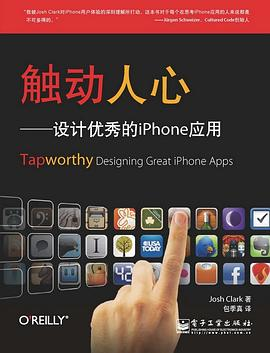

《触动人心》

总体观点
智能手机绝不是缩小版的个人电脑。移动设备的使用场景是碎片的、走动的、单手的、充满打扰的，优秀的应用必须适配这种‘随时随地，即用即走’的现实生活状态。
触屏交互的核心物理法则是‘手指代替了鼠标’。手指没有悬停状态，且拥有肉体遮挡。所有可点击区域必须符合44x44像素的最小物理尺寸，且必须置于大拇指轻松覆盖的自然热区之中。
让应用触动人心的秘诀在于克制与愉悦：果断砍掉90%从桌面端移植过来的冗余功能，用顺应物理惯性的直觉手势、礼貌少打扰的对话反馈，打造专注解决单一痛点的指尖利器。
核心观点
-
1. 移动场景的三大典型心理：一瞥、顺手、探索
用户掏出手机通常处于三种状态：看眼时间的微任务（一瞥）、排队时的碎片消遣（顺手）、躺在沙发上的专注沉浸（探索）。
天气应用将核心温度和降雨概率做成首屏大号卡片，让奔跑在雨中的用户掏出手机看一眼就能瞬间获取关键决策。 -
2. 大拇指法则（The Thumb Zone）：一切围绕单手操作设计
大多数人单手握持手机，屏幕底部和中间区域是大拇指扫过的黄金舒适区，屏幕顶部则是高摩擦的死角区。
将高频使用的核心操作按钮和底部导航栏放在屏幕下半部分，危险的删除或低频的全局设置放在屏幕右上角防误触。 -
3. 44像素准则：为肉质手指保留充足的命中面积
手指在屏幕上的落点面积远大于鼠标光标，任何可交互目标的物理点击热区都不得小于44x44像素，哪怕图标视觉看起来很小。
界面上的返回箭头视觉宽度可能只有16像素，但其周围的透明点击感应区域必须外扩扩展到44像素以上以确保百发百中。 -
4. 消灭前置教程，让界面自己教用户使用
没有人愿意在第一次打开App时阅读厚厚的多页操作说明书；优秀的触控界面通过拟物隐喻和微动效引导，让用户自然领悟。
阅读器界面在初次打开时让卡片边缘轻微回弹一下，用户立刻本能意会到该界面可以左右横滑翻页。 -
5. 手势是快捷方式，绝不能当作唯一的必选路径
摇一摇、三指轻点等高级手势很有趣味，但因为其不可见性容易被遗忘；核心业务路径必须始终保留显式的按钮入口。
邮件列表支持向左横滑快捷标记已读，但也必须在长按选择模式和详情页中提供明确的已读按钮作为兜底。 -
6. 礼貌对话：不要在用户忙碌时弹窗乞求好评
移动交互要懂得分寸感；警惕弹窗滥用，把报错和系统通知就地以非模态形式解决，不要轻易打断用户正在进行的任务心流。
不要在用户刚启动App急着叫车时弹出‘给我们打个五星好评’的阻断式对话框，而应在成功结束一段愉悦行程后轻量呈现。
全书结构
-
第1章 触动与出发
界定移动计算的本质特征：在走动、颠簸、分心等碎片化现实物理环境中，重构人与屏幕的关系。
分析用户在地铁拥挤车厢中单手抓吊环、单手查路线的极端场景，论证极简易用对于移动应用的生死意义。 -
第2章 这值得一触吗？
提出App立项核心质问：过滤非必要功能，提炼真正利用了移动传感器与即时性价值的杀手级场景。
将某银行复杂的全功能网上银行系统精简，剥离出仅保留快速查账单与ATM网点导航的轻量移动App获得空前成功。 -
第3章 微小的触屏
详解触屏人体工程学基础：大拇指热区分布、手指物理遮挡效应以及44x44像素最小触控面积规范。
在表单设计中增大输入框间距与行高，避免用户用粗壮的手指点击地址输入框时误触发下方的提交按钮。 -
第4章 理清头绪：组织架构
解析移动端三大经典信息架构：扁平层级（标签栏）、树状层级（列表钻取）与内容驱动型沉浸式布局。
音乐播放应用采用经典底部5标签栏扁平导航，核心播放控制面板浮于底部，随时上滑展开全屏歌词封面。 -
第5章 标准控件
剖析iOS原生控件（表格视图、导航栏、分段控制器、选择器）的内在交互预期，劝诫非必要不重复造轮子。
使用原生UIPickerView滚轮选择器替代自制杂乱弹出框，充分利用用户早已在系统培养出的惯性滚动心智。 -
第6章 脱颖而出
探讨在遵循平台规范的前提下，如何通过材质质感、音效细节与符合直觉的拟物隐喻打造品牌独特魅力。
备忘录应用设计出如同真实皮革笔记本的撕边纸张纹理与翻页沙沙声，让数字记录充满物理世界的亲和力。 -
第7章 第一印象
打造极速启动体验：设计伪装成界面的启动图以消除等待焦虑，消灭强迫注册登录与繁杂的多页启动教程。
相机应用启动页即刻渲染空取景框，瞬间让用户觉得硬件响应极快，镜头秒级对焦抓住精彩抓拍瞬间。 -
第8章 触控手势：轻拂、滑动与捏合
系统讲解手势的物理惯性模型：动量滚动、双指缩放、边缘滑返，以及手势作为隐形加速器的设计边界。
照片流支持双指自然捏合收缩回到相册网格，缩放过程跟随指尖实时无缝变形，赋予数字内容以物理质量感。 -
第9章 驾驭横屏与竖屏
分析屏幕旋转的交互契约：横屏不仅是布局拉伸，更是视角的切换（如从列表浏览切换为全屏沉浸大图或图表分析）。
股票软件在竖屏展示个股实时行情与新闻列表，一旦手机横置，界面自动无缝展开全屏专业的K线深度分析图。 -
第10章 礼貌的对话与反馈
制定应用社交礼仪准则：善用触觉震动、状态栏提示与微动效确认，拒绝侵入式弹窗打断，温柔接纳网络断流。
当网络信号微弱时，先在本地乐观更新点赞状态并打上微小的重发标记，等网络恢复默默补发，绝不弹窗报错拦截。 -
第11章 邻里相处：系统集成与扩展
探讨应用如何融入整个移动生态：调用相机、GPS定位、系统通讯录，借助URL Scheme实现多应用协同作业。
记账应用读取用户地理位置与时间，自动建议当前正处于星巴克并带出咖啡分类，将手动记账步骤缩减为单次点击确认。